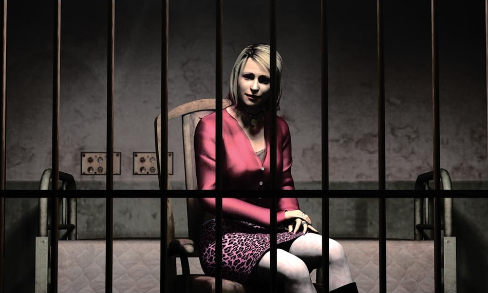
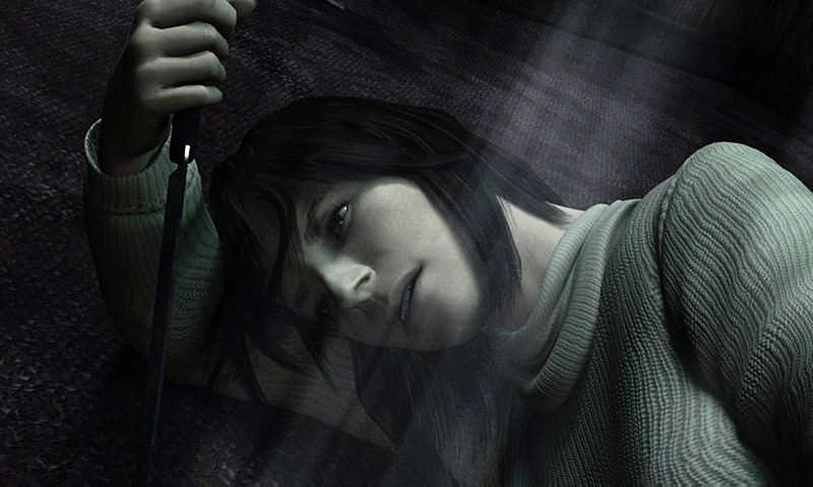
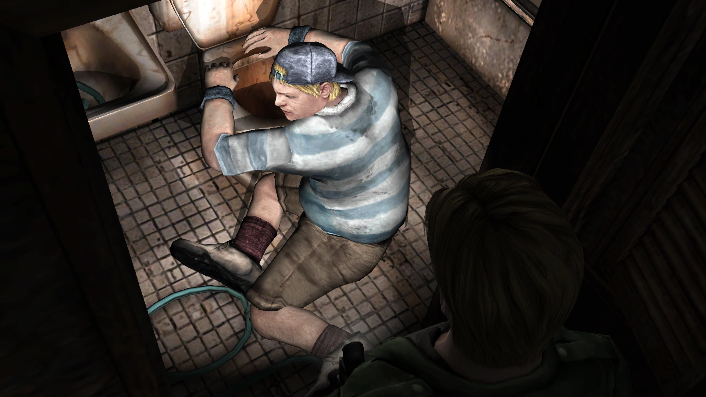

Characters
Spoilers Ahead

Silent Hill 2 only has six characters, and most of them have stories not expanded upon in-game, instead referenced to through character dialogue and letters found throughout the world. The characters are listed from most important to the story, to least important.
Table of Contents
James SunderlandMary Shepherd-Sunderland
Maria
Laura
Angela Orosco
Eddie Dombrowski
James Sunderland

Main protagonist James Sunderland is lured to the lakeside town of Silent Hill after receiving a letter from his deceased wife. The letter tells him to look for her in their 'special place', but he doesn't know where that may be. While he wanders the town, he meets other characters of the game. Most importantly is Maria, who he mistakes for his wife upon first meeting her. She is a spitting image of his late wife, Mary. Depending on his (your) actions - how you treat Maria, what objects you interact with, and how well you take care of youe health - you are able to experience multiple different endings.
Mary Shepherd-Sunderland

Mary Shepherd-Sunderland is the protagonist, James', wife. She seems to have written a letter to James, telling him to meet her in the town of Silent Hill, in their 'special place'. However, by the beginning of the game, James states that Mary has been dead for 3 years.
Maria
Maria was created by the town (as seen in the Born From A Wish bonus scenario) in order to torment James. She is the spitting image of Mary, albeit in more revealing clothes and flirtier. Throughout the game, James is forced to watch her die over and over. Each time, she returns without remembering it ever happened. In one instance, she claims James got into the elevator and left without her, but James watched the doors close before she could make it, and witnessed Pyramid Head stab her through the back.
Laura

Laura is a minor character that plays an important role behind the scenes. She was in the hospital Mary was in, and often spent most of her time with Mary. Mary told Laura all about James, but in her anger for her illness, Mary only told her the bad things, like how James had left her in the hospital, waiting day by day for him to visit. Mary would have liked to adopt Laura when she recovered, but she never did. In the Leave ending, James can be seen leaving Silent Hill with Laura.
Angela Orosco
Angela, although a minor character, has some of the most heartbreaking moments of the game. She was abused, sexually and physically, by her father and brother. Her mother is only mentioned once, but it is assumed she did nothing to stop the abuse from happening. Throughout the game, Angela goes into bouts of timidness and anger, regressing and becoming child-like some times, and lashing out at James other times. She is the only minor character to have a monster based around her psyche, while the rest are manifestations of James' guilt or, in the case of Eddie, driven insane.
Eddie Dombrowski
Eddie, despite being a boss, has the least explicit backstory. In a discussion with Laura, we can surmise he came to the town while running from the police. The first time we meet him, he is throwing up in a bathroom in an apartment, with a dead body a short distance away in the kitchen. He insists he didn't kill the man. Later on, however, he admits to killing several people who bullied him for his weight or pissed him off. None of Eddie's story or character intersects with James' outside of James accidentally setting Eddie off and being forced to fight him.